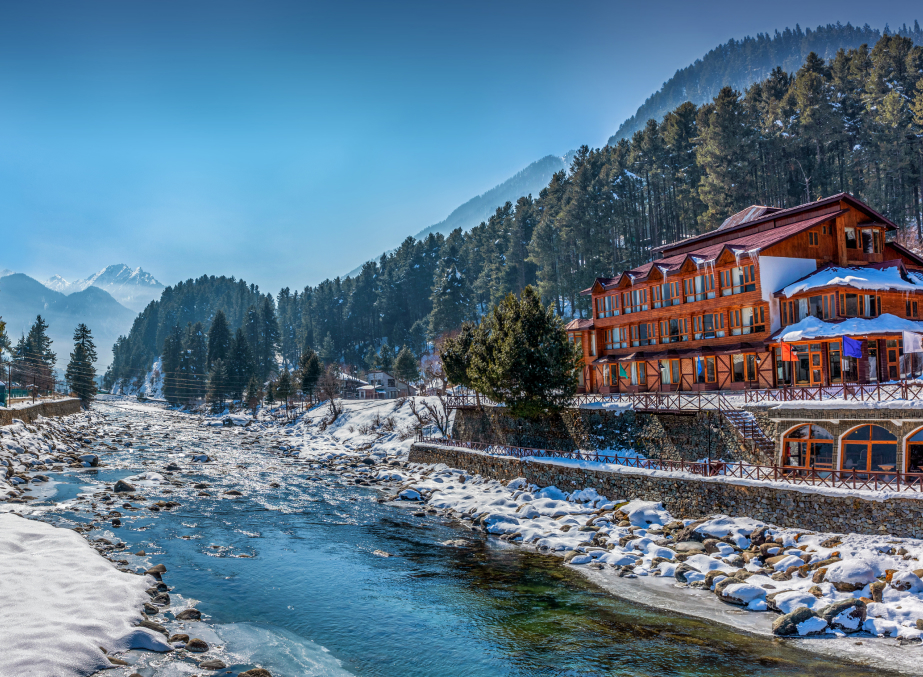
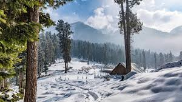
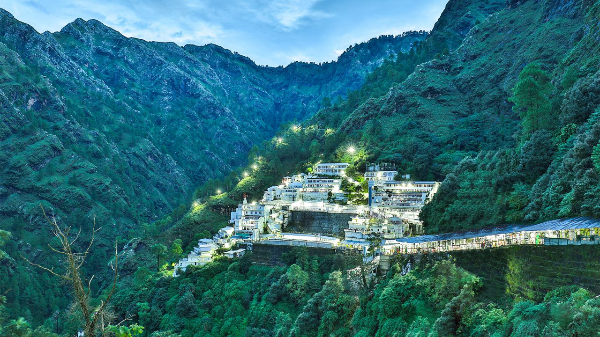
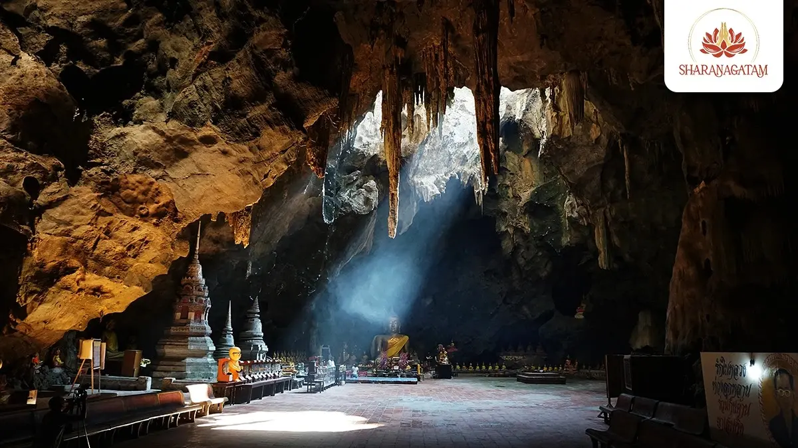

Dal Lake
Known as the Jewel of Srinagar, Dal Lake is famous for shikaras, houseboats, and floating gardens.
READ MORE »
Gulmarg
A world-famous ski resort with snow-capped peaks and the highest cable car in the world.
READ MORE »

Pahalgam
A lush valley surrounded by pine forests and rivers, popular for trekking and river rafting.
READ MORE »

Sonmarg
Called the “Meadow of Gold,” Sonmarg is the gateway to Himalayan treks and glaciers.
READ MORE »

Vaishno Devi
One of India’s most sacred pilgrimage sites, located in the Trikuta mountains of Jammu.
READ MORE »
